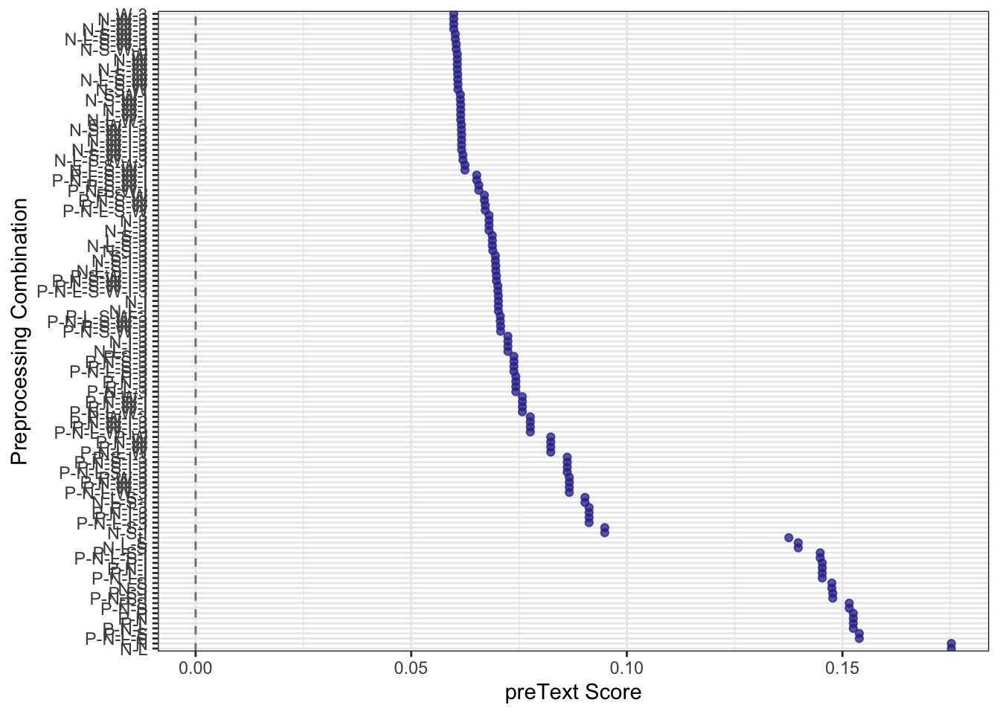
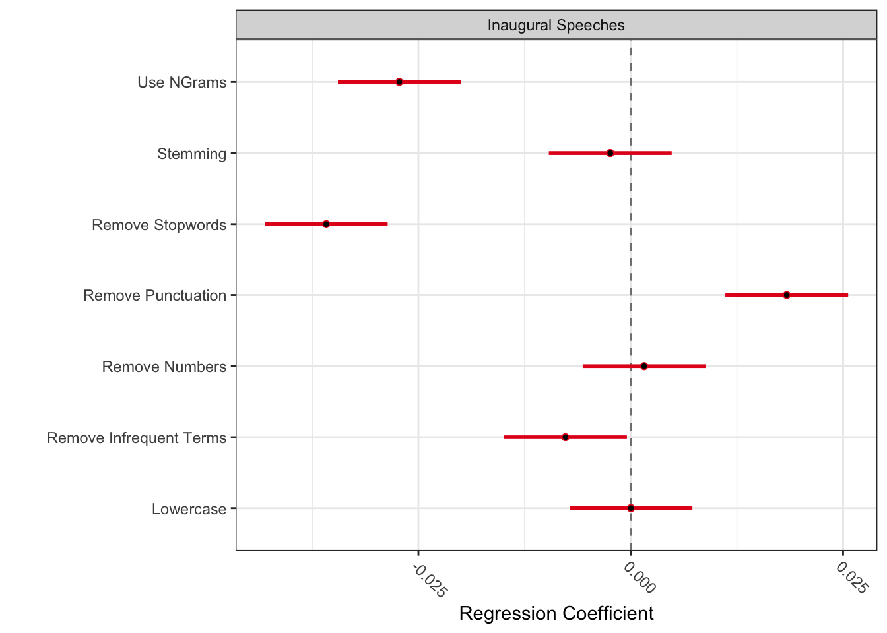
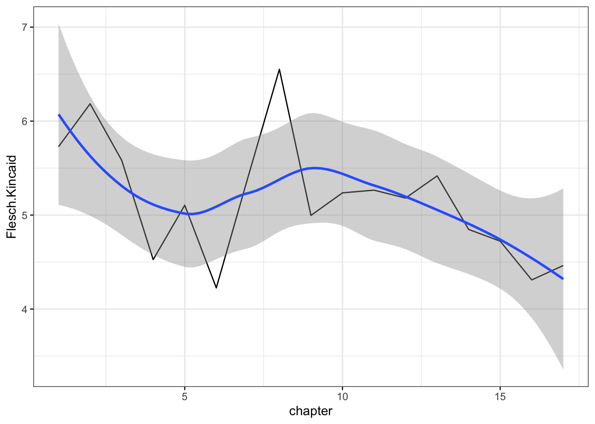
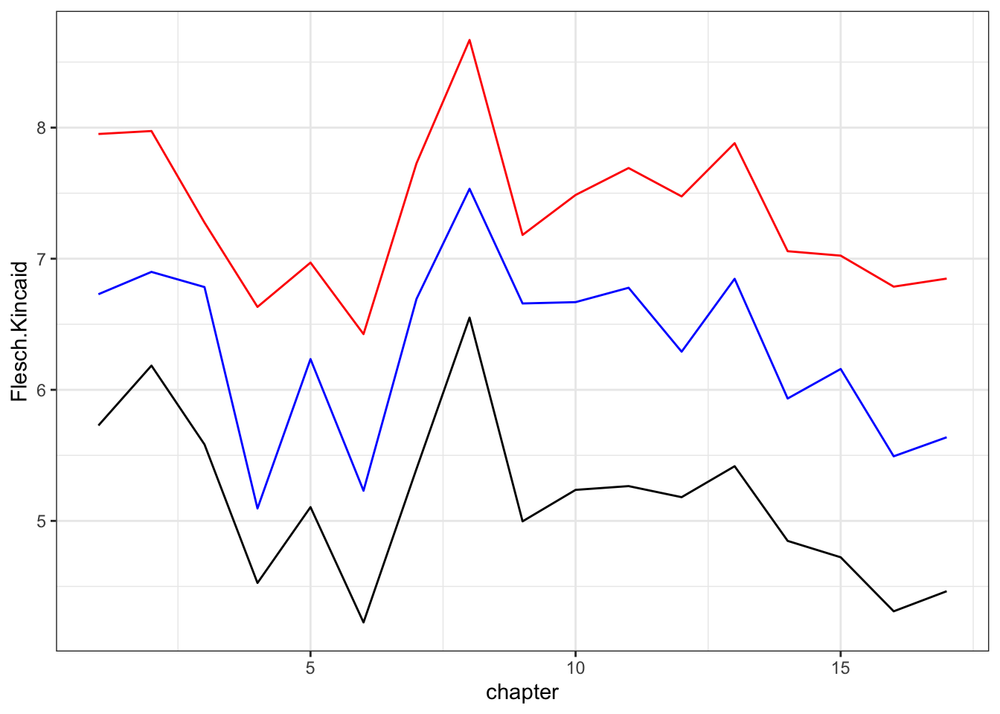

This is our fifth tutorial for running R. In this tutorial, we’ll learn about text pre-processing. Text data is often messy and noisy, and careful preprocessing can soften the edges for downstream analyses.
By the end of this notebook, you should be familiar with the following:
Stopword lists
Stemming
preText
N-grams and phrasemachine
Readability
Recap: Tokenization
This week, we’ll return to looking at the Harry Potter series. We’ll first install and load the packages and data for today’s notebook.
── Conflicts ────────────────────────────────────────── tidyverse_conflicts() ──
✖ dplyr::arrange() masks plyr::arrange()
✖ purrr::compact() masks plyr::compact()
✖ dplyr::count() masks plyr::count()
✖ dplyr::desc() masks plyr::desc()
✖ dplyr::failwith() masks plyr::failwith()
✖ dplyr::filter() masks stats::filter()
✖ dplyr::id() masks plyr::id()
✖ dplyr::lag() masks stats::lag()
✖ dplyr::mutate() masks plyr::mutate()
✖ dplyr::rename() masks plyr::rename()
✖ dplyr::summarise() masks plyr::summarise()
✖ dplyr::summarize() masks plyr::summarize()
ℹ Use the conflicted package (<http://conflicted.r-lib.org/>) to force all conflicts to become errors
library(quanteda)
Package version: 4.3.1
Unicode version: 14.0
ICU version: 71.1
Parallel computing: disabled
See https://quanteda.io for tutorials and examples.
# Define the folder containing the .rda files (Change to your path). folder <-"/Users/mpang/Dropbox/Teaching Resources/DACSS_TAD/HarryPotter"# Get the list of all .rda files in the folderrda_files <-list.files(folder, pattern ="\\.rda$", full.names =TRUE)# Load all .rda files into the environmentlapply(rda_files, load, .GlobalEnv)
As a reminder, we have seven books — each stored as a character vector where each chapter is an element in that vector — now available in our workspace. These are:
philosophers_stone: Harry Potter and the Philosophers Stone (1997)
chamber_of_secrets: Harry Potter and the Chamber of Secrets (1998)
prisoner_of_azkaban: Harry Potter and the Prisoner of Azkaban (1999)
goblet_of_fire: Harry Potter and the Goblet of Fire (2000)
order_of_the_phoenix: Harry Potter and the Order of the Phoenix
half_blood_prince: Harry Potter and the Half-Blood Prince (2005)
deathly_hallows: Harry Potter and the Deathly Hallows (2007)
As you’ll recall, we want to convert these to corpus objects that are easier to work with.
We then add indicators for books and chapters, and create the metadata. This will be useful later when we add all the books together into a single corpus.
philosophers_stone_summary$book <-"Philosopher's Stone"# create a chapter indicatorphilosophers_stone_summary$chapter <-as.numeric(str_extract(philosophers_stone_summary$Text, "[0-9]+"))# add the metadatadocvars(philosophers_stone_corpus) <- philosophers_stone_summaryphilosophers_stone_summary
Corpus consisting of 17 documents, showing 17 documents:
Text Types Tokens Sentences book chapter
text1 1271 5693 350 Philosopher's Stone 1
text2 1066 4154 237 Philosopher's Stone 2
text3 1226 4656 297 Philosopher's Stone 3
text4 1193 4832 322 Philosopher's Stone 4
text5 1818 8446 563 Philosopher's Stone 5
text6 1563 8016 566 Philosopher's Stone 6
text7 1374 5487 351 Philosopher's Stone 7
text8 1095 3608 198 Philosopher's Stone 8
text9 1422 6195 411 Philosopher's Stone 9
text10 1293 5237 334 Philosopher's Stone 10
text11 1110 4215 277 Philosopher's Stone 11
text12 1509 6790 447 Philosopher's Stone 12
text13 1076 3953 262 Philosopher's Stone 13
text14 1110 4394 308 Philosopher's Stone 14
text15 1385 6486 459 Philosopher's Stone 15
text16 1581 8357 591 Philosopher's Stone 16
text17 1489 7172 506 Philosopher's Stone 17
Next, we move to tokenization. The default breaks on white space.
Tokens consisting of 17 documents and 6 docvars.
text1 :
[1] "THE" "BOY" "WHO" "LIVED" "Mr" "." "and"
[8] "Mrs" "." "Dursley" "," "of"
[ ... and 5,681 more ]
text2 :
[1] "THE" "VANISHING" "GLASS" "Nearly" "ten" "years"
[7] "had" "passed" "since" "the" "Dursleys" "had"
[ ... and 4,142 more ]
text3 :
[1] "THE" "LETTERS" "FROM" "NO" "ONE"
[6] "The" "escape" "of" "the" "Brazilian"
[11] "boa" "constrictor"
[ ... and 4,644 more ]
text4 :
[1] "THE" "KEEPER" "OF" "THE" "KEYS" "BOOM" "."
[8] "They" "knocked" "again" "." "Dudley"
[ ... and 4,820 more ]
text5 :
[1] "DIAGON" "ALLEY" "Harry" "woke" "early" "the"
[7] "next" "morning" "." "Although" "he" "could"
[ ... and 8,434 more ]
text6 :
[1] "THE" "JOURNEY" "FROM" "PLATFORM"
[5] "NINE" "AND" "THREE-QUARTERS" "Harry's"
[9] "last" "month" "with" "the"
[ ... and 8,004 more ]
[ reached max_ndoc ... 11 more documents ]
You’ll recall that — in Week 2 — we covered a couple of options from here about what we can do next with our texts. A few dynamics are quickly evident from the text above: punctuation and numbers are still present. Those are straightforward to remove when you tokenize.
# you can also drop punctuationphilosophers_stone_tokens <-tokens(philosophers_stone_corpus, remove_punct = T)print(philosophers_stone_tokens)
Tokens consisting of 17 documents and 6 docvars.
text1 :
[1] "THE" "BOY" "WHO" "LIVED" "Mr" "and" "Mrs"
[8] "Dursley" "of" "number" "four" "Privet"
[ ... and 4,784 more ]
text2 :
[1] "THE" "VANISHING" "GLASS" "Nearly" "ten" "years"
[7] "had" "passed" "since" "the" "Dursleys" "had"
[ ... and 3,556 more ]
text3 :
[1] "THE" "LETTERS" "FROM" "NO" "ONE"
[6] "The" "escape" "of" "the" "Brazilian"
[11] "boa" "constrictor"
[ ... and 3,984 more ]
text4 :
[1] "THE" "KEEPER" "OF" "THE" "KEYS" "BOOM" "They"
[8] "knocked" "again" "Dudley" "jerked" "awake"
[ ... and 3,910 more ]
text5 :
[1] "DIAGON" "ALLEY" "Harry" "woke" "early" "the"
[7] "next" "morning" "Although" "he" "could" "tell"
[ ... and 6,998 more ]
text6 :
[1] "THE" "JOURNEY" "FROM" "PLATFORM"
[5] "NINE" "AND" "THREE-QUARTERS" "Harry's"
[9] "last" "month" "with" "the"
[ ... and 6,750 more ]
[ reached max_ndoc ... 11 more documents ]
# as well as numbersphilosophers_stone_tokens <-tokens(philosophers_stone_corpus, remove_punct = T,remove_numbers = T)print(philosophers_stone_tokens)
Tokens consisting of 17 documents and 6 docvars.
text1 :
[1] "THE" "BOY" "WHO" "LIVED" "Mr" "and" "Mrs"
[8] "Dursley" "of" "number" "four" "Privet"
[ ... and 4,784 more ]
text2 :
[1] "THE" "VANISHING" "GLASS" "Nearly" "ten" "years"
[7] "had" "passed" "since" "the" "Dursleys" "had"
[ ... and 3,556 more ]
text3 :
[1] "THE" "LETTERS" "FROM" "NO" "ONE"
[6] "The" "escape" "of" "the" "Brazilian"
[11] "boa" "constrictor"
[ ... and 3,981 more ]
text4 :
[1] "THE" "KEEPER" "OF" "THE" "KEYS" "BOOM" "They"
[8] "knocked" "again" "Dudley" "jerked" "awake"
[ ... and 3,907 more ]
text5 :
[1] "DIAGON" "ALLEY" "Harry" "woke" "early" "the"
[7] "next" "morning" "Although" "he" "could" "tell"
[ ... and 6,989 more ]
text6 :
[1] "THE" "JOURNEY" "FROM" "PLATFORM"
[5] "NINE" "AND" "THREE-QUARTERS" "Harry's"
[9] "last" "month" "with" "the"
[ ... and 6,749 more ]
[ reached max_ndoc ... 11 more documents ]
Often capitalization is not something that we want to retain. Here, we’ll change everything to lower case. Note that, though I have not run into any instance of someone actually doing this, you could also convert to all upper-case tokens by tokens_toupper()
Tokens consisting of 17 documents and 6 docvars.
text1 :
[1] "the" "boy" "who" "lived" "mr" "and" "mrs"
[8] "dursley" "of" "number" "four" "privet"
[ ... and 4,784 more ]
text2 :
[1] "the" "vanishing" "glass" "nearly" "ten" "years"
[7] "had" "passed" "since" "the" "dursleys" "had"
[ ... and 3,556 more ]
text3 :
[1] "the" "letters" "from" "no" "one"
[6] "the" "escape" "of" "the" "brazilian"
[11] "boa" "constrictor"
[ ... and 3,981 more ]
text4 :
[1] "the" "keeper" "of" "the" "keys" "boom" "they"
[8] "knocked" "again" "dudley" "jerked" "awake"
[ ... and 3,907 more ]
text5 :
[1] "diagon" "alley" "harry" "woke" "early" "the"
[7] "next" "morning" "although" "he" "could" "tell"
[ ... and 6,989 more ]
text6 :
[1] "the" "journey" "from" "platform"
[5] "nine" "and" "three-quarters" "harry's"
[9] "last" "month" "with" "the"
[ ... and 6,749 more ]
[ reached max_ndoc ... 11 more documents ]
Stopword lists
Depending on your research project, many of the words above may be of limited interest. Consider “the”; it’s unlikely to ever be of much interest in understanding the thematic content of a set of texts. Often we just want to remove these sorts of function words that contribute so little substantive meanings. Most commonly, these are referred to as stopwords.
Quanteda package
With quanteda, we can remove stopwords using any of few pre-defined lists that come shipped with the package. Here, we can print that list out first, then remove the tokens:
Tokens consisting of 17 documents and 6 docvars.
text1 :
[1] "boy" "lived" "mr" "mrs" "dursley" "number"
[7] "four" "privet" "drive" "proud" "say" "perfectly"
[ ... and 2,507 more ]
text2 :
[1] "vanishing" "glass" "nearly" "ten" "years" "passed"
[7] "since" "dursleys" "woken" "find" "nephew" "front"
[ ... and 1,906 more ]
text3 :
[1] "letters" "one" "escape" "brazilian" "boa"
[6] "constrictor" "earned" "harry" "longest-ever" "punishment"
[11] "time" "allowed"
[ ... and 2,213 more ]
text4 :
[1] "keeper" "keys" "boom" "knocked" "dudley" "jerked"
[7] "awake" "`" "cannon" "`" "said" "stupidly"
[ ... and 2,201 more ]
text5 :
[1] "diagon" "alley" "harry" "woke" "early" "next"
[7] "morning" "although" "tell" "daylight" "kept" "eyes"
[ ... and 4,141 more ]
text6 :
[1] "journey" "platform" "nine" "three-quarters"
[5] "harry's" "last" "month" "dursleys"
[9] "fun" "true" "dudley" "now"
[ ... and 3,759 more ]
[ reached max_ndoc ... 11 more documents ]
Tidytext package
In addition to quanteda, there are other packages containing different lists of stopwords, for example, tidytext. Tidytext provides various lexicons for English stop words. Sources of the stopwords are: snowball, SMART, or onix.
# A tibble: 571 × 2
word lexicon
<chr> <chr>
1 a smart
2 a's smart
3 able smart
4 about smart
5 above smart
6 according smart
7 accordingly smart
8 across smart
9 actually smart
10 after smart
# ℹ 561 more rows
tidytext::get_stopwords(language ="de") # change language
# A tibble: 231 × 2
word lexicon
<chr> <chr>
1 aber snowball
2 alle snowball
3 allem snowball
4 allen snowball
5 aller snowball
6 alles snowball
7 als snowball
8 also snowball
9 am snowball
10 an snowball
# ℹ 221 more rows
Remove stop words using tidytext stopwords. And we see find the number of tokens after removing stopwords is different as we use different packages.
Tokens consisting of 17 documents and 6 docvars.
text1 :
[1] "boy" "lived" "mr" "mrs" "dursley" "number"
[7] "privet" "drive" "proud" "perfectly" "normal" "people"
[ ... and 1,989 more ]
text2 :
[1] "vanishing" "glass" "ten" "years" "passed" "dursleys"
[7] "woken" "find" "nephew" "front" "step" "privet"
[ ... and 1,533 more ]
text3 :
[1] "letters" "escape" "brazilian" "boa" "constrictor"
[6] "earned" "harry" "longest-ever" "punishment" "time"
[11] "allowed" "cupboard"
[ ... and 1,814 more ]
text4 :
[1] "keeper" "keys" "boom" "knocked" "dudley" "jerked"
[7] "awake" "`" "cannon" "`" "stupidly" "crash"
[ ... and 1,760 more ]
text5 :
[1] "diagon" "alley" "harry" "woke" "early" "morning"
[7] "daylight" "eyes" "shut" "tight" "`" "dream"
[ ... and 3,315 more ]
text6 :
[1] "journey" "platform" "three-quarters" "harry's"
[5] "month" "dursleys" "fun" "true"
[9] "dudley" "scared" "harry" "stay"
[ ... and 2,898 more ]
[ reached max_ndoc ... 11 more documents ]
Stemming
Now, we turn to stemming. Of the pre-processing options, stemming is perhaps the most controversial. The underlying idea is to collapse multiple tokens that are of the same general form into a single token (the word stem). For example, consider “tackle”, which could take a multitude of different forms: “tackle”, “tackling”, “tackled”, or “tackles”. Without stemming, each of these is treated as a unique token. That’s potentially undesirable, particularly when the central concept (or stem) is likely to be the real point of substantive interest. Therefore, we can stem the tokens in our vocabulary, yielding a new set of tokens. In the above example, this would yield “tackl”.
# we use the tokens after removing stopwords using quantedaphilosophers_stone_tokens <-tokens_wordstem(philosophers_stone_tokens1)philosophers_stone_tokens
Tokens consisting of 17 documents and 6 docvars.
text1 :
[1] "boy" "live" "mr" "mrs" "dursley" "number" "four"
[8] "privet" "drive" "proud" "say" "perfect"
[ ... and 2,507 more ]
text2 :
[1] "vanish" "glass" "near" "ten" "year" "pass" "sinc"
[8] "dursley" "woken" "find" "nephew" "front"
[ ... and 1,906 more ]
text3 :
[1] "letter" "one" "escap" "brazilian" "boa"
[6] "constrictor" "earn" "harri" "longest-ev" "punish"
[11] "time" "allow"
[ ... and 2,213 more ]
text4 :
[1] "keeper" "key" "boom" "knock" "dudley" "jerk" "awak" "`"
[9] "cannon" "`" "said" "stupid"
[ ... and 2,201 more ]
text5 :
[1] "diagon" "alley" "harri" "woke" "earli" "next"
[7] "morn" "although" "tell" "daylight" "kept" "eye"
[ ... and 4,141 more ]
text6 :
[1] "journey" "platform" "nine" "three-quart" "harri"
[6] "last" "month" "dursley" "fun" "true"
[11] "dudley" "now"
[ ... and 3,759 more ]
[ reached max_ndoc ... 11 more documents ]
##Stemming Vs. Lemmatization
Stemming is a process that stems or removes last few characters from a word, this often leads to incorrect meanings and spelling (such as the “tackl” we saw earlier). In contrast, Lemmatization considers the context and converts the word to its meaningful base form, which is called Lemma.
Now let’s experience the difference:
We have an example sentence. Then we preprocess that data: tokenization, remove punctuation and stop words.
example <-"This location does not have good service. When through drive-through and they forgot our drinks and our sides. While they were preparing what they forgot, we could see another girl who had her back to us and it was obvious that she was on the phone. ANy other KFC would be better."example_ready <-tokens(example,remove_punct=T)example_ready <-tokens_select(example_ready,pattern=stopwords("en"),select ="remove")
Now we compare stemming and lemmatization. Note that we can also lemmatize tokens using cleanNLP package. Please check Tutorial 4 for more details.
Clearly, you have a multitude of options for pre-processing texts. The choice, then, for what to do becomes complicated. Should you remove stop words? Numbers? Punctuation? Capitalization? Should you stem? What combination and why? Anyone who has done work in the area has faced scrutiny — warranted or not — from reviewers questioning the pre-processing choices.
At the most basic level, the answer to this should be theoretically driven. Consider the research question and whether each of the varied pre-processing steps would make sense for that research question. Are you missing something if you remove capitalization or punctuation? Are there different versions of the same term that might be meaningful for your analysis? It’s most important to be able to defend the choices on the merits.
Of course, you also have the ability to simply, in an appendix, include versions of analyses that carry out the analysis while employing the pre-processing steps highlighted by the reviewer. Especially if your code is well-written and the computational time required for the analysis is low, this may be another useful response.
preText
A final way of approaching this is more systematic, and is proposed by Matt Denny — a former UMass (and Penn State University) student! — and Art Spirling in their paper. They’ve written an R package to execute the recommendations from their paper, which you can download directly from github. Note that there are a ton of dependencies associated with the package. You can see a vignette describing the use of preTexthere.
preText: Diagnostics to Assess the Effects of Text Preprocessing Decisions
Version 0.7.2 created on 2021-07-25.
copyright (c) 2021, Matthew J. Denny, Georgetown University
Arthur Spirling, NYU
Type vignette('getting_started_with_preText') to get started.
Development website: https://github.com/matthewjdenny/preText
We use the U.S. presidential inaugural speeches from Quanteda example data
corp <- data_corpus_inaugural# use first 10 documents for exampledocuments <- corp[1:10,]# take a look at the document namesprint(names(documents))
Having loaded in some data, we can now make use of the factorial_preprocessing() function, which will preprocess the data 64 or 128 different ways (depending on whether n-grams are included). In this example, we are going to preprocess the documents all 128 different ways. This should take between 5 and 10 minutes on most modern laptops. Longer documents and larger numbers of documents will significantly increase run time and memory usage.
This function will output a list object with three fields. The first of these is $choices, a data.frame containing indicators for each of the preprocessing steps used. The second is $dfm_list, which is a list with 64 or 128 entries, each of which contains a quanteda::dfm object preprocessed according to the specification in the corresponding row in choices. Each DFM in this list will be labeled to match the row names in choices, but you can also access these labels from the $labels field. We can look at the first few rows of choices below:
Now that we have our preprocessed documents, we can perform the preText procedure on the factorial preprocessed corpus using the preText() function. It will be useful now to give a name to our data set using the dataset_name argument, as this will show up in some of the plots we generate with the output.
Generating document distances...
Generating preText Scores...
Generating regression results..
The R^2 for this model is: 0.6000916
Regression results (negative coefficients imply less risk):
Variable Coefficient SE
1 Intercept 0.112 0.005
2 Remove Punctuation 0.018 0.004
3 Remove Numbers 0.002 0.004
4 Lowercase 0.000 0.004
5 Stemming -0.002 0.004
6 Remove Stopwords -0.036 0.004
7 Remove Infrequent Terms -0.008 0.004
8 Use NGrams -0.027 0.004
Complete in: 1.697 seconds...
The preText() function returns a list of result with four fields:
$preText_scores: A data.frame containing preText scores and preprocessing step labels for each preprocessing step as columns. Note that there is no preText score for the case of no prepprocessing steps.
$ranked_preText_scores: A data.frame that is identical to $preText_scores except that it is ordered by the magnitude of the preText score
$choices: A data.frame containing binary indicators of which preprocessing steps were applied to factorial preprocessed DFM.
$regression_results: A data.frame containing regression results where indicators for each preprocessing decision are regressed on the preText score for that specification.
We can now feed these results to two functions that will help us make better sense of them. preText_score_plot() creates a dot plot of scores for each preprocessing specification:
preText_score_plot(preText_results)
Warning in ggplot2::geom_point(ggplot2::aes(x = Variable, y = Coefficient), :
Ignoring unknown parameters: `linewidth`

Here, the least risky specifications have the lowest preText score and are displayed at the top of the plot. We can also see the conditional effects of each preprocessing step on the mean preText score for each specification that included that step. Here again, a negative coefficient indicates that a step tends to reduce the unusualness of the results, while a positive coefficient indicates that applying the step is likely to produce more unusual results for that corpus.
Warning in ggplot2::geom_point(ggplot2::aes(y = Variable, x = Coefficient), :
Ignoring unknown parameters: `linewidth`

In this particular toy example, we see that including n-grams and removing stop words tends to produce more “normal” results, while removing punctuation tends to produce more unusual results.
N-grams and phrasemachine
Like mentioned in the lecture, curse of dimensionality means we get lots of meaningless bigrams, trigrams (e.g. “is”, “is of”, “is of the”). What if we want to find substantively meaningful n-grams? The solution is phrasemachine.
phrasemachine: Simple Phrase Extraction
Version 1.2.0 created on 2017-05-29.
copyright (c) 2016, Matthew J. Denny, Abram Handler, Brendan O'Connor.
Type help('phrasemachine') or
vignette('getting_started_with_phrasemachine') to get started.
Development website: https://github.com/slanglab/phrasemachine
We load in the U.S. presidential inaugural speeches from Quanteda example data, and use the first 5 documents for example.
Phrasemachine provides one main function: phrasemachine(), which takes as input a vector of strings (one string per document), or a quanteda corpus object. This function returns phrases extracted from the input documents in one of two forms. Find more information here
Currently tagging document 1 of 5
Currently tagging document 2 of 5
Currently tagging document 3 of 5
Currently tagging document 4 of 5
Currently tagging document 5 of 5
Extracting phrases from document 1 of 5
Extracting phrases from document 2 of 5
Extracting phrases from document 3 of 5
Extracting phrases from document 4 of 5
Extracting phrases from document 5 of 5
# look at some example phrasesprint(phrases[[1]]$phrases[1:10])
While we’ve covered some pre-processing above, we’re going to take a detour now before we head into representing texts next week. One form of analysis that can occassionally be interesting, though with limitations, is the readability of a text. The general idea here is that some forms of composition are easier to understand, while others may take more scrutiny. Interestingly, most of these are based on transformations around some basic aspects of text: the length of words or sentences, for instance.
There are loads of actual measures for readability; fortunately, nearly all are included with the quanteda. For the full list, check out the reference page here. Here, we’ll play around and check out the readability of Philosopher’s Stone by chapter, to see how the book progresses.
library(quanteda)library(quanteda.textstats)# calculate readabilityreadability <-textstat_readability(philosophers_stone_corpus, measure =c("Flesch.Kincaid")) # add in a chapter numberreadability$chapter <-c(1:nrow(readability))# look at the datasethead(readability)
`geom_smooth()` using method = 'loess' and formula = 'y ~ x'

That’s interesting, but as I noted, we have lots of options. Lets take a look at a couple of others.
readability <-textstat_readability(philosophers_stone_corpus, measure =c("Flesch.Kincaid", "FOG", "Coleman.Liau.grade")) # add in a chapter numberreadability$chapter <-c(1:nrow(readability))# look at the datasethead(readability)
# plot resultsggplot(readability, aes(x = chapter)) +geom_line(aes(y = Flesch.Kincaid), color ="black") +geom_line(aes(y = FOG), color ="red") +geom_line(aes(y = Coleman.Liau.grade), color ="blue") +theme_bw()

The shapes are all pretty close. Let’s look at some correlations.
cor(readability$Flesch.Kincaid, readability$FOG, use ="complete.obs")
[1] 0.9338218
cor(readability$Coleman.Liau.grade, readability$FOG, use ="complete.obs")
[1] 0.9130903
This is a little bit of the story and is pretty straightforward. Remember how all of these are just “magic number” transformations of the same underlying measures (syllables, word counts, sentence length, etc.)? Because of that, they are generally really highly correlated. That’s a good thing.
So what’s the downside? Well, I can’t do any better to explain the problem than Mark Liberman’s Language Log post here.